03game SHIFT — Workshop Tycoon材料を運び、加工し、梱包して出荷。小さな作業場を育てていく、見下ろし型の工場経営ゲーム。 JavaScript · Canvas作品を開く ↗ 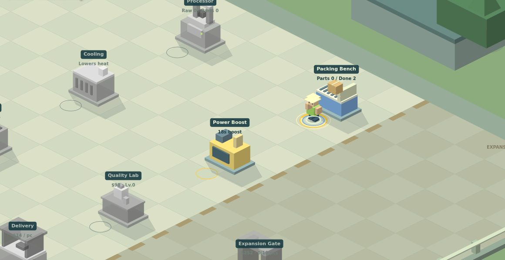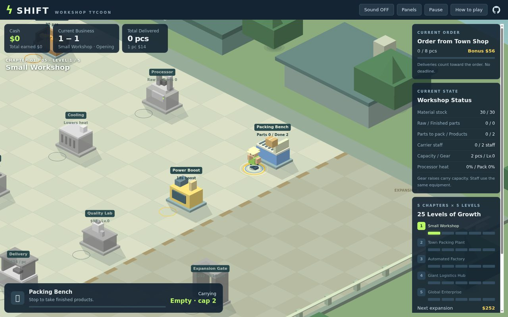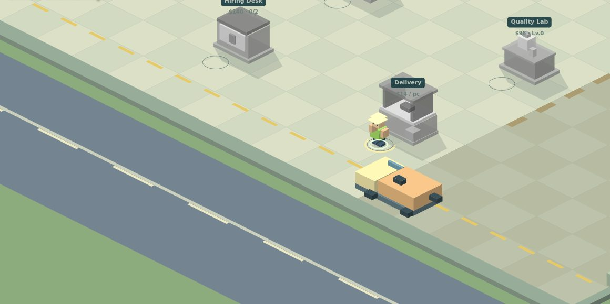
08game ぱくっと！ゴブとも大きなコマが、小さなコマをぱくっと覆う。スマホで遊べる、重ねる三目並べ。CPU対戦と2人対戦に対応。対象年齢：4歳～ JavaScript · Mobile作品を開く ↗ 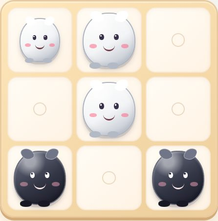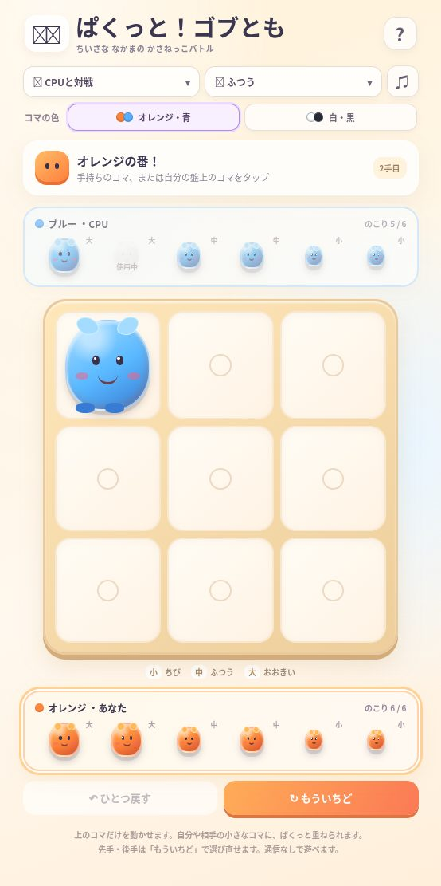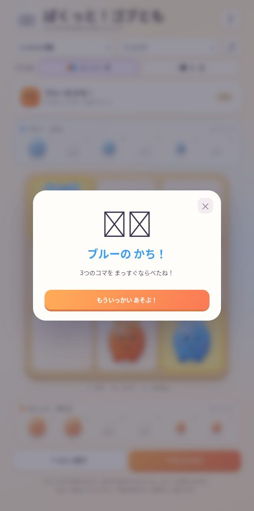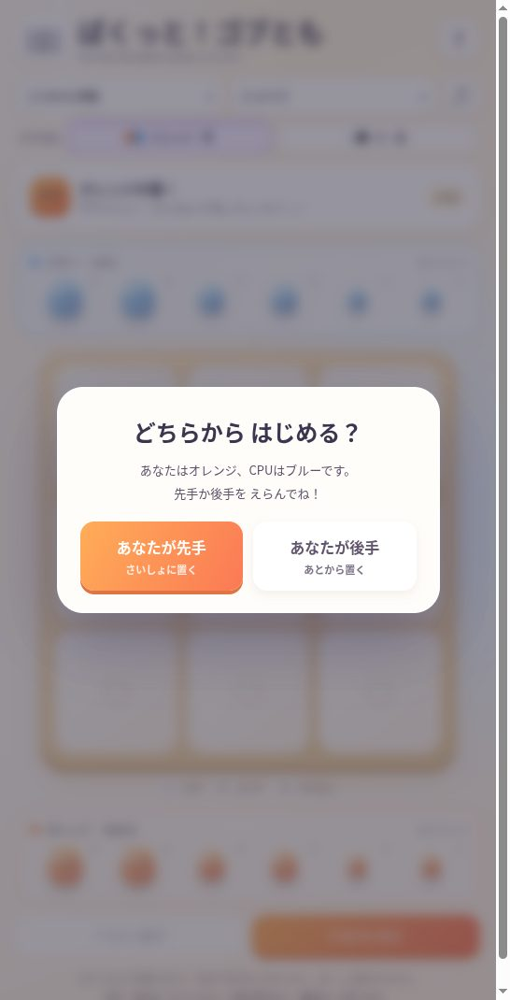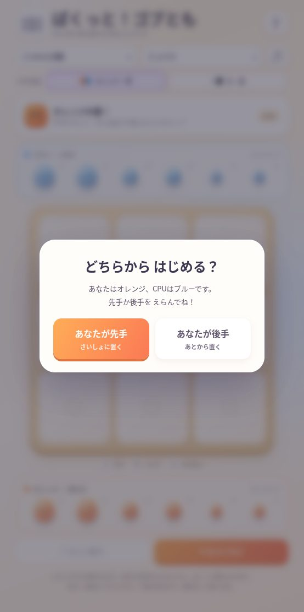
12game シマエナガ雪の森にまぎれたシマエナガを探してクリックしよう。白くて丸い小鳥を見つけて進む、Claude Artifactで公開された探索ゲーム。対象年齢：4歳～ Claude Artifact作品を開く ↗ 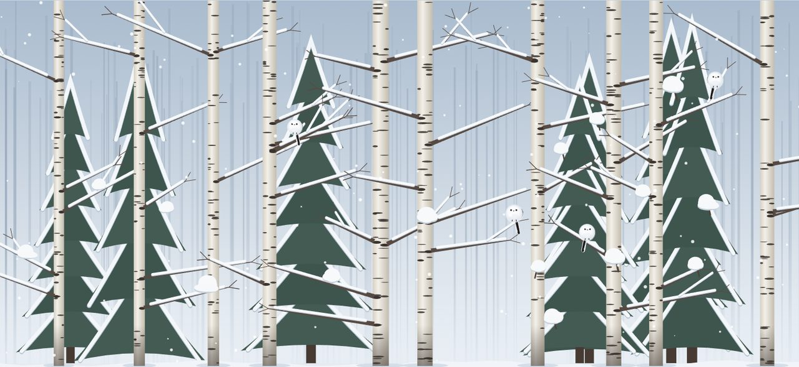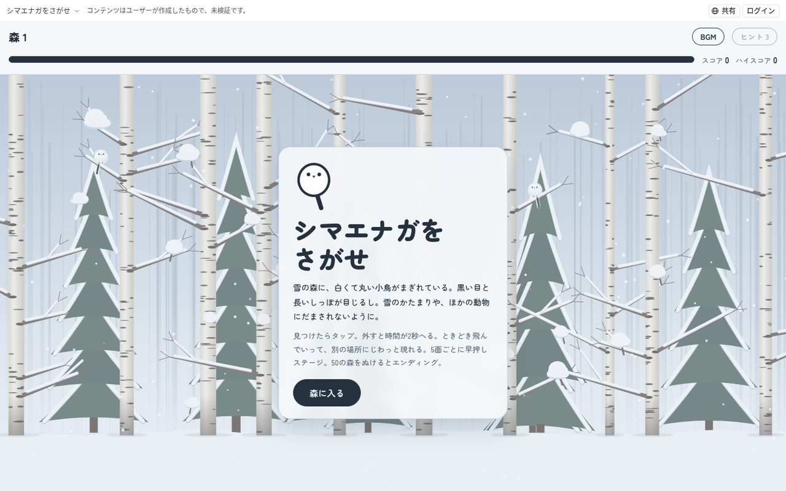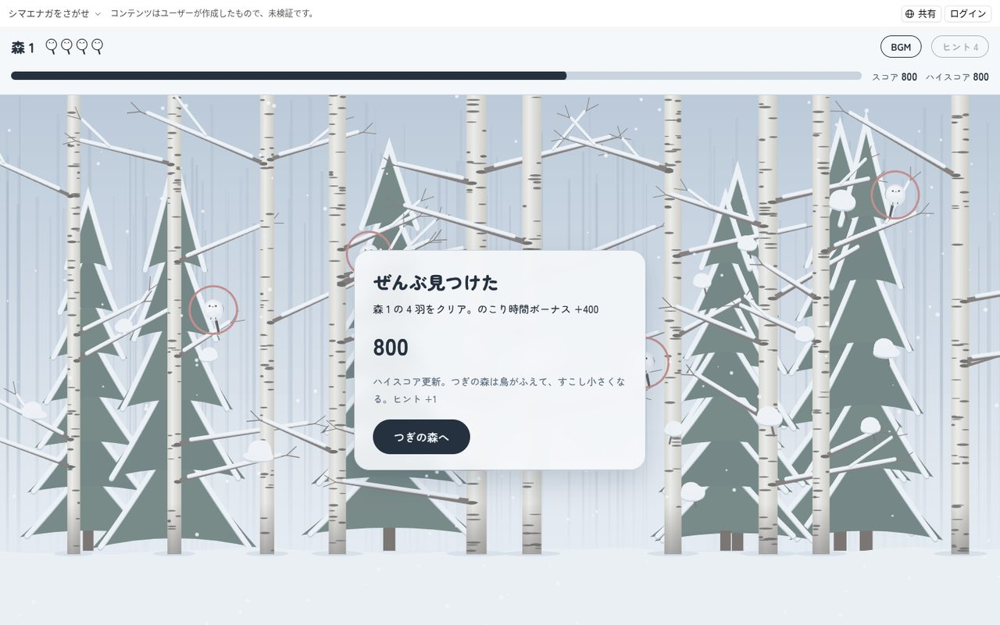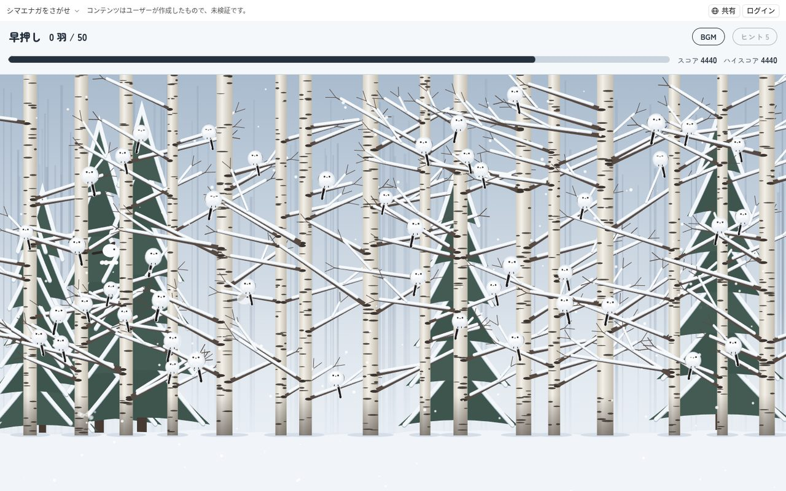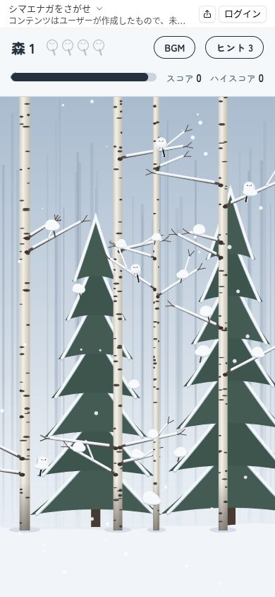